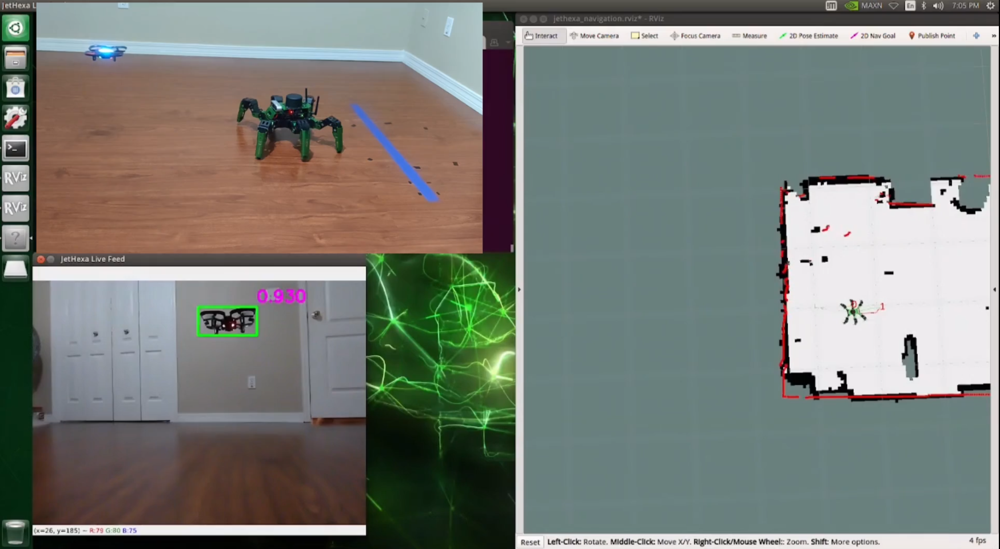
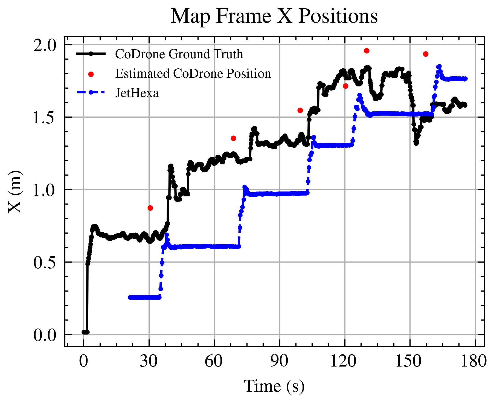
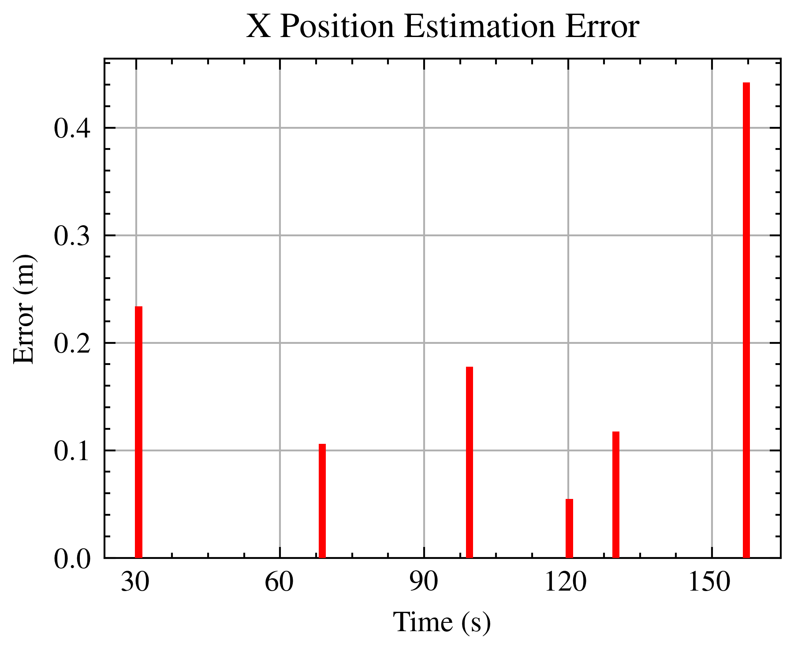
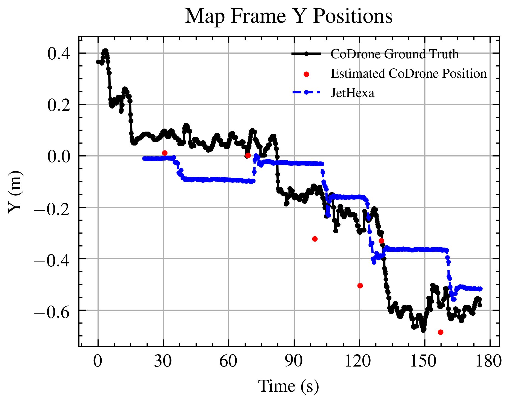
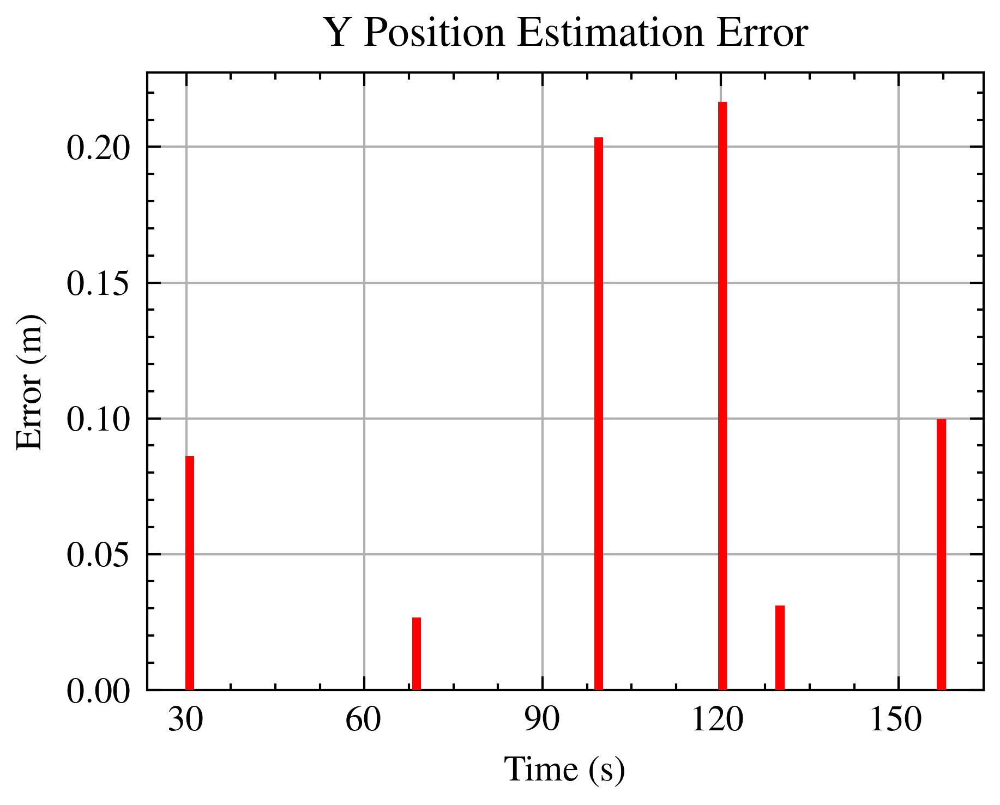

UAVFollower: Master’s Thesis¶
Video:
Showcase (Volume warning)
Thesis: on Argo Scholar Commons
Code: View the code repository on GitHub.
Robot(s) Used:
JetHexa (Hiwonder)
CoDrone EDU (Robolink)
Synopsis¶
This was the subject of my Master’s Thesis, Leader-Follower-based Collaborative Navigation of a UGV-UAV Formation. The purpose of this project was to develop a UAV-following behavior for an Unmanned Ground Vehicle (UGV), creating a collaborative pair in which an unmanned aerial vehicle can lead an unmanned ground vehicle and compensate for the UGV’s poor ground-level field-of-view. To keep the project flexible, this was to be done by constraining the platforms to total isolation; there was no communication between the UGV and UAV. This was by far the most ambitious project I’ve undertaken in robotics, and I learned/improved a great deal in the process, including:
Machine learning object detection (YOLO)
Fiducial markers
Scripting
Data organization and processing (esp. the use of ROS bags)
Iterative, long-term refinement
Improved System Design
Object Detection¶
The project began with detecting the UAV itself. Ultimately, I used an object detection model, training a YOLOv5 [1] model with a combined data set of custom images and publicly-available images totaling 1,492 images. The combined data set yielded great results, being able to detect multiple quadrotor UAVs at high confidence intervals (>= 0.80).
Multiple detections using the YOLO model.¶
To filter the detections, I used the technique developed in the TennisBallDetector project. I refined the k-means clustering program [3] and used it to process the generated detection data. Though the bounding box data could not be visualized, I’ve provided an example below of the clustering process using fiducial marker detections:
Example of k-means clustering parameter selection.¶
ROS Package¶
Next, I implemented the ROS packages for the project [2]. There were two in total. One, rosnp_msgs, was a small message-definition library that enabled the transmission of Numpy arrays across the ROS network. This library was also critical in bridging the software compatibility issue introduced by the ROS version used in the JetHexa. ROS Melodic officially supports Python 2, but the machine learning library (and therefore majority of the project) uses Python 3, rendering some transmission packages unavailable. rosnp_msgs ameliorated this issue.
The second package, uav_follower, implemented the following behavior. There were multiple subsystems:
Liaison/Coordinator - Facilitated the other subsystems’ operations; Program synchronization.
Photographer - captured images from JetHexa’s camera
Detector - Detected UAVs in aforementioned images; displayed live video feed.
DataProcessor - From detections, calculated the required navigation waypoint in the map frame
CurrentPosition - Retrieved current robot position.
Here is a basic communication diagram displaying the data flow of the entire system:
Inter-subsystem data flow¶
Results¶
Below are the results for the experiments. Overall the hexapod was able to follow the UAV over time, but there were consistent over-estimates in the UAV position, leading to following a bit too closely (~18cm instead of 30cm). Also, as the drone operates, its servos heat and its flight becomes more unstable, leading to higher estimation errors as time proceeds.
|  |  |
|  |  |
{kind=link}
Reflection¶
I am pleased and thankful to The Most High that this project was a success.
One habit I’ve picked up in both this project, as well as the Tennis Ball Detector and UAVBaseball is the use of text file project journals. This practice was incredibly useful for tracking my thinking over time as well as organizing my thoughts mid-design. The journal notes were an incredible aid during thesis writing.
One moment I’m most proud of that I couldn’t discuss in the thesis due to lack of relevance is that I was able to identify and rectify the source of a 14 second display lag in the video stream, reducing it down to ~2 seconds. Among others, this was a great victory that kept the project viable. I grew a lot as a roboticist, writer, programmer, and project manager in the course of this thesis, and I look forward to further progress in the future.